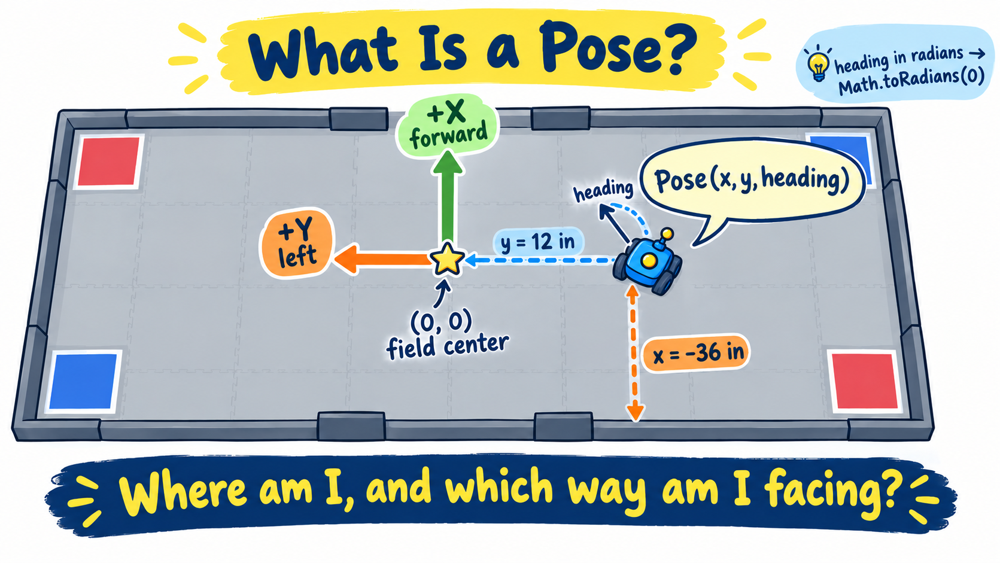
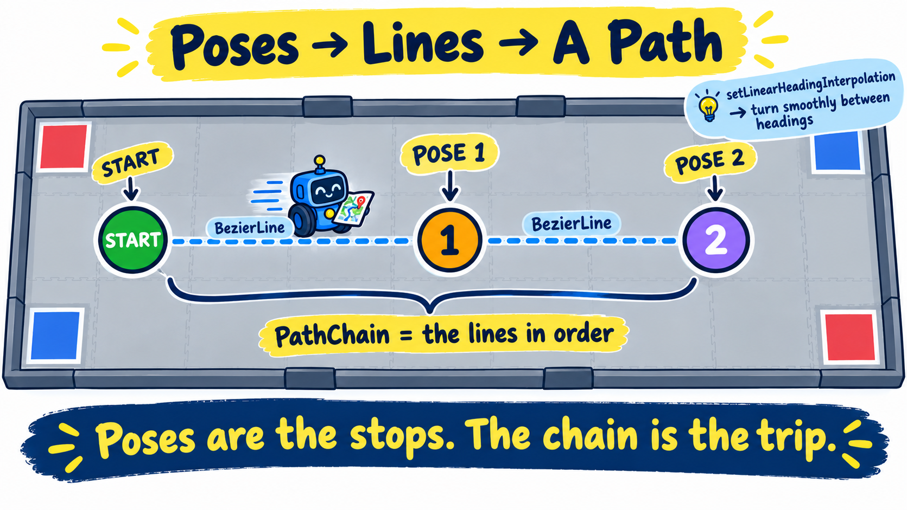
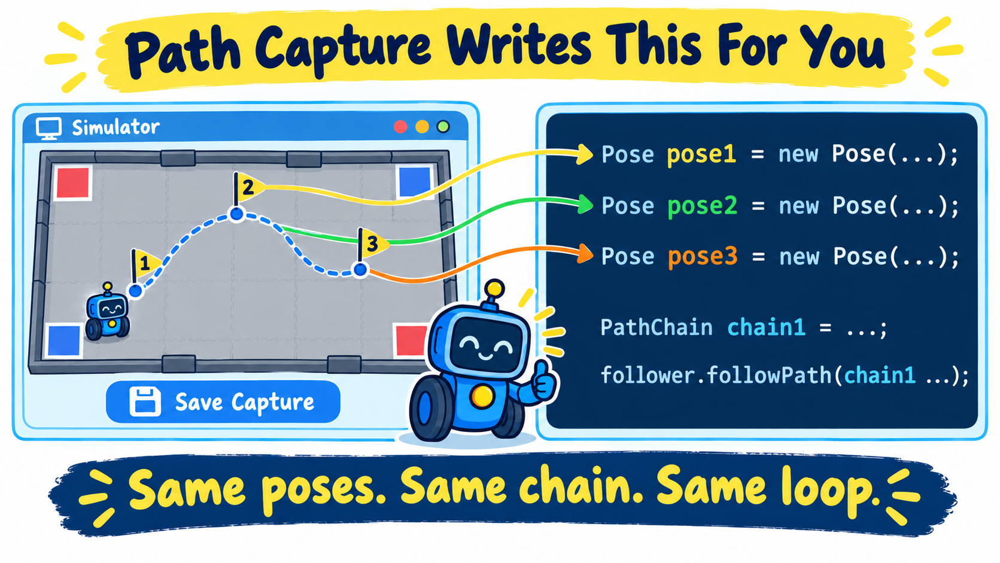

Every FTC match starts with 30 seconds of autonomous: the robot drives itself, with nobody touching a controller. Up to now you have written TeleOp — you drive. Now the robot needs a plan it can run alone: a list of spots on the field, joined into a path. In this lesson you learn what those spots (poses) are, how they chain together into a path, and you write a short autonomous that drives a path by itself. Most of your real autos will be made with the simulator's Path Capture tool — and by the end of this lesson you'll be able to read exactly what it writes.
A TeleOp OpMode loops forever reading sticks and buttons. An autonomous OpMode has no driver —
it runs a fixed list of steps once and stops. That is why this file is marked @Autonomous instead of
@TeleOp: it shows up in the autonomous slot on the Driver Hub.
This lesson adds three new files to your package — SimpleAuto.java (the one you
write), plus PinpointLocalizer.java and MecanumDrivetrainSubsystem.java (given, ready to read)
— and for the first time your code borrows code someone else wrote. Everything you finished last
lesson is still here; these files just join it. If you don't see all three in your file list yet, click
Reset to Start at the bottom of this lesson to pull in this lesson's starting code.
A library is a bundle of code someone else already wrote and tested, so you don't have to. Pedro Pathing is a library that knows how to steer a robot smoothly to an exact spot on the field — tricky math that would take weeks to get right. You get to just borrow it.
.jar file is simply a zip of that library's code (here,
pedro-core.jar). Picture it as a book you added to your shelf.import line at the top of a file — like
import com.pedropathing… in the new files — is you saying “I want to use this part of
that book.”Behind the scenes: this simulator already keeps pedro-core.jar on its shelf, so the instant a
file imports Pedro it just works — there's nothing for you to install here.
Steering to an exact field position is a control problem: the robot must keep checking “where am I versus where should I be?” and correct itself. That closed loop is what Pedro Pathing's Follower does for us. The Follower needs two helpers, and both are new given files in your package that you can read but do not have to write:
PinpointLocalizer — answers “where am I?” It wraps the same
goBILDA Pinpoint your Localization subsystem uses, configured the same way, so the two never disagree.MecanumDrivetrainSubsystem — answers “how do I push the wheels?” It uses the
same mecanum mixing math as your TeleOp Drivebase.Open both files and skim them. Notice there is nothing magic inside — just the sensor and the wheels you already know, wrapped so the Follower can call them. They are given because matching the exact shape Pedro asks for (its interface) is just plumbing — the interesting logic is the drive and localization code you already wrote in earlier lessons.
Your mechanisms are not new: autonomous builds the same Robot as TeleOp and calls the same
robot.update() scheduler. This lesson only drives; the next lesson adds actions like shooting.
A Pose is the same three-number idea from the localization lesson — an (x, y) spot
plus a heading — but now you use it to tell the robot where to go. x and
y are in inches, measured from the center of the field (the origin,
(0, 0)). The heading is which way the robot is pointing when it gets there.

x, y, in field inches) and which way it
faces (heading).It uses the exact same field frame you sanity-checked last lesson:
x go up)y go up; right makes it go down)This is why last lesson's pod fix mattered: if +Y pointed the wrong way, every path would
steer sideways into a wall. Same frame, now used to give orders instead of just to read.
Before a match you physically set the robot down on the field, then call
follower.setStartingPose(startPose) to tell it exactly where that is. From that moment its tracked
position is in field inches. If the pose you type does not match where you set the robot, every path
is shifted by the difference — so this one line matters.
One pose is just a spot. A path is a list of poses, visited in order. Pedro builds it from two pieces:
BezierLine is a straight line from one pose to the next.PathChain strings those lines together, in order, into one path the Follower can
drive: start → pose 1 → pose 2 → …Each line also says what the robot's heading does along the way. setLinearHeadingInterpolation(a, b)
turns the robot smoothly from heading a at the start of the line to heading b at the end. If
both headings are the same, the robot simply keeps facing that way.

BezierLines connect them; a PathChain strings the lines
together into one path.Your path has three poses: the start, 48 inches forward to pose1, then
48 inches left to park at pose2. One PathChain holds both lines.
SimpleAuto.java⩢ Copy// Each spot on the field is a Pose(x, y, headingRadians).
Pose startPose = new Pose(START_X_IN, START_Y_IN, Math.toRadians(START_HEADING_DEG));
Pose pose1 = new Pose(12.0, -36.0, Math.toRadians(0.0)); // 48" forward
Pose pose2 = new Pose(12.0, 12.0, Math.toRadians(0.0)); // then 48" left to park (+Y)
// A BezierLine is a straight path; a PathChain strings the lines together, in order.
PathChain chain1 = follower.pathBuilder()
.addPath(new BezierLine(startPose, pose1))
.setLinearHeadingInterpolation(startPose.getHeading(), pose1.getHeading())
.addPath(new BezierLine(pose1, pose2))
.setLinearHeadingInterpolation(pose1.getHeading(), pose2.getHeading())
.build();A Pose wants its heading in radians, the unit the driving math prefers. You think in
degrees, so write Math.toRadians(0.0) and let Java convert. Same trick you used for telemetry, just the
other direction.
Now run the plan: seed the start pose, then follow the chain. The key pattern is the follow-and-wait
loop: after followPath(...) you keep pumping follower.update() (to drive) and
robot.update() (to keep mechanisms alive) until the Follower says it is no longer busy.
SimpleAuto.java⩢ Copy// Tell the localizer where the robot is starting (field inches from here on).
follower.setStartingPose(startPose);
// Follow the whole chain: forward to pose1, then left to pose2.
follower.followPath(chain1, SPEED, true);
while (opModeIsActive() && follower.isBusy()) {
follower.update(); // drive one step along the path
robot.update(); // keep the mechanisms' state machines alive
}You never call sleep(). Instead you take thousands of tiny steps: each follower.update()
nudges the wheels a little and re-checks the position, and each robot.update() keeps the mechanisms
running. When the Follower reaches the end of the path it reports isBusy() == false and the loop ends
— the exact same “lots of small steps, never one big freeze” rhythm you have used all along.
Typing poses by hand is fine for a short path, but measuring every spot gets slow. That's what the simulator's Path Capture tool is for: you drive the robot to each spot and save it, and it writes the auto for you. Open any captured auto and you'll recognize every piece of it:
Pose pose1 = new Pose(...) lines — one for each spot you saved, in field inches, with
Math.toRadians(...) headings.PathChain built from BezierLines with setLinearHeadingInterpolation,
joining your poses in order.follower.setStartingPose(startPose) — so where you place the robot still has to match.follower.update() and robot.update().
SimpleAuto is your reference for how an auto works. For match autos, use Path Capture to place
the poses — and because you understand poses, chains and the follow-and-wait loop, you can read and fix
anything it writes.
If you have ever deployed Pedro Pathing to this robot from Android Studio (a Pedro line in your
build.gradle), remove that dependency, rebuild, and re-install the Robot Controller app before you
deploy this lesson. Otherwise the robot ends up with two copies of Pedro — the one baked into
your app and the one this tool uploads — and the on-robot build fails with a duplicate-class error. From here on,
let OnBot Java (this tool) be the one source of Pedro. Earlier lessons never touched Pedro, so this
only matters now. In the simulator there is nothing to do.
PinpointLocalizer.java and
MecanumDrivetrainSubsystem.java and skim them — the sensor and wheels you already know.SimpleAuto.java, define startPose, pose1 and
pose2, and chain them into chain1.pose2's heading to Math.toRadians(90.0) and run it
again. The robot should turn to face left while it strafes.Your robot just drove a path with nobody touching the controls. Next up: Actions in Autonomous, where you learn how the run loop really works and earn the code that makes a captured auto stop and shoot.